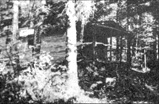
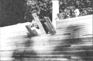
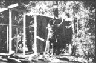
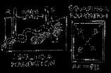
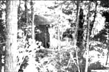
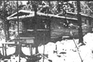

My wife, Meghan, and I have found that a comfortable house, sturdy outhouse and woodshed can still be built for practically nothing here in the continental United States (as we'll soon relate) . . . but one thing definitely costs money today and that one thing is land. So we worked two years at jobs we didn't especially like-Meghan as a school teacher and myself in construction and other odd jobs-and bought our own little chunk of earth with the money we earned. After that, the rest came easy.
We chose to settle in northwestern Montana for four reasons: (1) to get away from hyperactive politics, (2) to drink sparkling, clear water from a mountain stream, (3) to breathe clean air and (4) to be part of the beautiful, snowy, peaceful winters. True, snowmobiles have destroyed some of that peacefulness . . . but the people who own such machines must hold a 9-to-5 job to support them and, therefore, can come up to the mountains on weekends only. Our paradise is still quiet five days a week . . . and it's here that we've built a two-room cabin, a woodshed and an outhouse-all three-for under $215.00.
The cabin-except for log beams and log foundation-is constructed entirely of cull 2 x 4's. It seems that one of the many sawmills in our region cuts only this one standard size of lumber and many of the timbers produced by the still are short, split or have minor flaws. The culls, which average about seven feet long, are sold in large bundles for approximately 7 1/2 cents each. By laminating these "seconds", one on top of another, we found we could build a solid wall four inches thick that was not weakened by the imperfections in the individual pieces of lumber.
We began our new home last summer by constructing a foundation of fir log. We could have chosen spruce, balsam, birch or tamarack just as easily but-of the four-spruce and balsam rot rapidly once subjected to dampness . . . and birch is just too beautiful to cut. Tamarack and fir are both strong and long-lasting and we picked the latter only because two large fir trees were near our building site.
In addition to being tough and tenacious, fir-we soon learned-is also extremely heavy. We felled the trees, cut. them into 20-foot lengths, peeled them and let 'em dry and lighten in the hot summer sun. Even after seasoning, it was a threeman job to wrestle each log into place.
Foundations should be both level and square . . . no small feat on our mountainous building site. We placed the largest logs we had on the downhill side of the slope, positioned the smaller ones uphill and filled in around them all until we had the beams anchored firm and true.
The best way to level a foundation without expensive tools is by picking up a new or used length of clear plas tic hose long enough to react, diagon ally across the structure you're building. Fill the hose with water and level from point A (a reference point) to point B by holding one end of the tubing up at A, allowing the hose to slump in the middle and moving the B end of the tubing up and down until the water's height at end A is on the reference mark. Check and you'll find the water at B at the same level.
To square a foundation, measure it diagonally both ways. When the diagonals are exactly the same length, you can be sure the structure is absolutely square.
Once our 20-foot-long foundation logs were firmly bedded, we placed 14-foot joists across them at right angles. We then nailed a floor of 2' x 4's across the joists and started stacking and nailing the cabin's walls, one on top of another. It was amazing to see how fast those walls went up.
We placed only one average-size window in the front and one in each of the cabin's two sides . . . and we've found that our lighting is inadequate. If we had it to do over, we'd now figure at least one large window per wall. Wood (and our house is nothing but) absorbs light and makes the building much darker inside than one would think.
The lower a structure is, the easier it is to heat. We therefore placed three equally spaced 14-foot log ceiling beams only 6 1/2 feet off the floor. Again, to save heat, the roof we built (of 2 x 4's) over laminated 2 x 4 rafters is very low pitched. So low pitched that we worried the typical worry that heavy snows might cave in the top of lodge . . . until we found that excess snow is melted off the building by escaping heat.
We installed durable asphalt roll roofing on our homemade home, taking care-as a local professional had instructed us led us-to put a double layer over building's eaves (where ice may form and tear the covering) and crown.
Our front door, made of 2 x 4 laminated vertically with a birch limb a handle, is so heavy that we to swing it from four 9-inch hinges. And folks be sure to move that monstrous wood stove in before you hang the door . . . we didn't, and we had to screw all those hinges on twice.
The six by fourteen-foot across the front of our cabin was built exactly like the cabin itself. We just extended the building's roof to cover it. In the summer (we faced our house south to take full advantage of the sun), that porch becomes a wonderful place to spend the long evenings. During cold weather, we stack wood on the porch and our dog lives underneath in a snug home insulated with straw.
As soon as we had our house and porch up and roofed, we caulked-or chinked-the walls of the main structure. We chinked only on the inside (maybe we'll catch the outside next year) and it took three to four cases-we lost exact count-of caulking compound to fill the cracks between the layers of lumber. With that detail finished, we moved into our new home! It had taken us 15 days-working from sunrise to sunset-to build the 20' x 14' cabin and six-foot-wide porch,
The first time outside temperatures dipped to 30 below last winter, we found the cold coming up through the floor of our brand new house. Straw stuffed under the building and snow banked completely around its foundation cured the situation for the rest of the season although a double floor with insulation between would certainly be a better permanent solution.
While on the subject of frigid weather I should mention that the lower the mercury dropped last winter, the more we noticed the draft coming in around our windows. We had gotten the windows free because they were slightly warped . . . and I'm afraid we didn't custom-fit our casings to the bowed sashes quite as tightly as we might have. I recommend more care with such details.
We deviated from our laminated 2 x 4 construction technique when we built the outbuildings on our homestead. In this age of concrete floors and aluminum walls, you know, many farmers are tearing down the old to make way for the new. We found such a farmer who wanted a chicken barn removed and we dismantled the structure for the lumber in it. The jolt gave us enough material to build an outhouse, a woodshed and the furniture and shelves in our cabin.
While putting in the outhouse we began to realize that anyone digging a hole six feet deep and two-and-a-half feet square through rock and gravel . . . only wants to do it once. So we built a casing to fit that hole and prevent it from collapsing.
Our approach to designing the actual privy may be a little unorthodox . . . but what we did was we measured the toilet seats and just kind of worked out from there. Backhouses (being relatively small) don't need foundations in the sense that larger buildings do . . . so we just built a 2 x 4 frame for ours and embellished the structure with a generous porch across its front.
In addition to supplying us with siding, the barn we tore down gifted our homestead with a couple of doors, hinges, a milk can, chicken manure for the garden, two repairable work harnesses and twelve log rafters. We decided to use a few of those timbers to make a high peaked roof over our privy and its porch.
With the high roof on the outhouse, we had room for a ventilating window in front and another on the back of the building (both are screened to prevent bugs from entering). The privy door is the original front door from the chicken barn. And yes, you're right . . . no matter how it's built, an outhouse is cold in a Montana winter.
The third structure we erected on our land was the woodshed. It was easy . . . no floor or foundation was needed. We built the frame from the last of the 2 x 4's and used recycled barn boards for the siding and the roof. The former back door on the chicken became the door to the wood and the few dollars we spent for the roll roofing with which we topped the building was almost our entire expense for the structure.
We designed the woodshed to six cords of firewood plus our carpentry and gardening tools . . . and since found the structure hand for drying weeds and flowers, hanging meat, storing dry goods or whatever.
With three snug buildings erected on our land, we thought our carpentry duties were completed . . . until we noticed that we owned more possssions than we could fit into a 14' x 20' cabin. So we made the house ten feet longer by adding another room directly to the back of the original structure.
The addition was easier said than done in some respects because there was a slight rise behind the cabin and we had agreed to build only with the contours of the land. So we elevated the back room.
Once the addition was completed we connected it to the main house by borrowing a chain saw and cutting a door-size hole in the back wall of original cabin. The severed stud were cased in with 2 x 4's (to make neat entry way) and two steps up the new room were added to the passage.
And does our new "split level" work? Probably better than you'd expect . . . because it contains the element of separation that is often needed when two people live together and alone for long, isolated periods.
We're kind of pleased with our outhouse and woodshed, too. For $215 ... we think we've done all right.
|
 the finished cabin |
 we raise the walls! |
 building the woodshed |
|
 leveling and squaring |
 our outhouse in the trees |
 the cabin in winter |